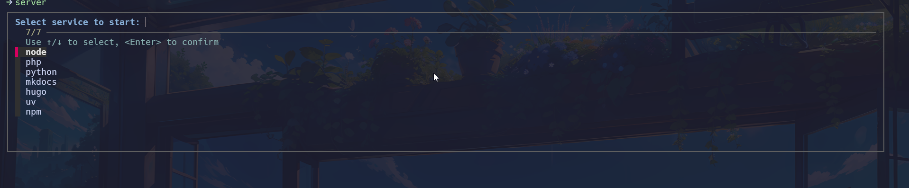
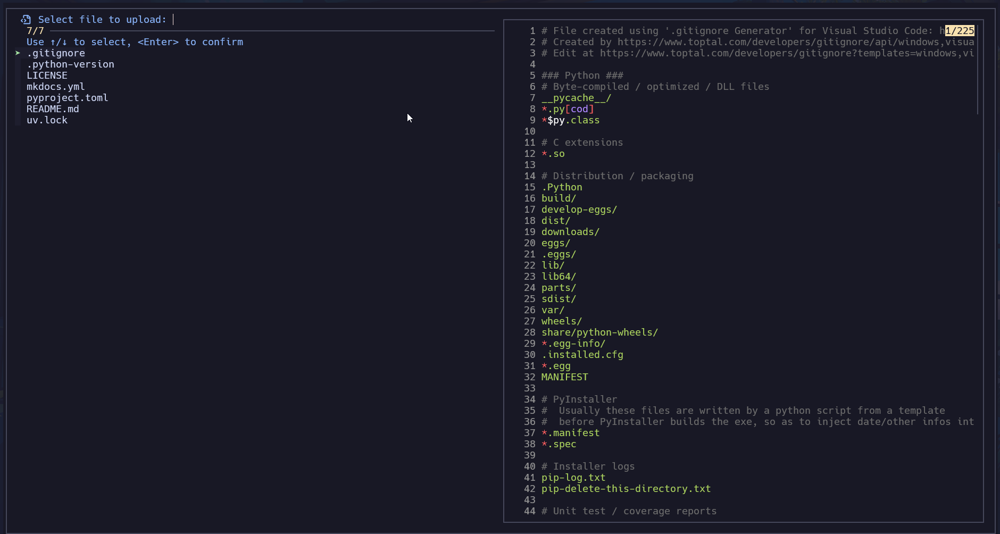
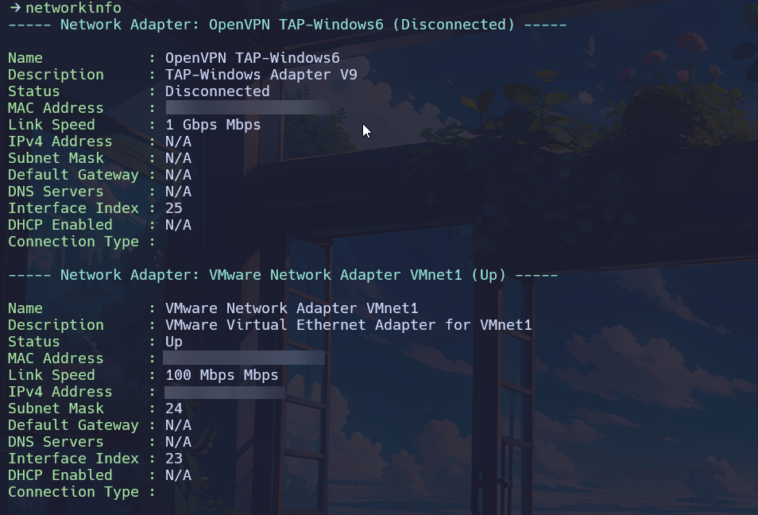
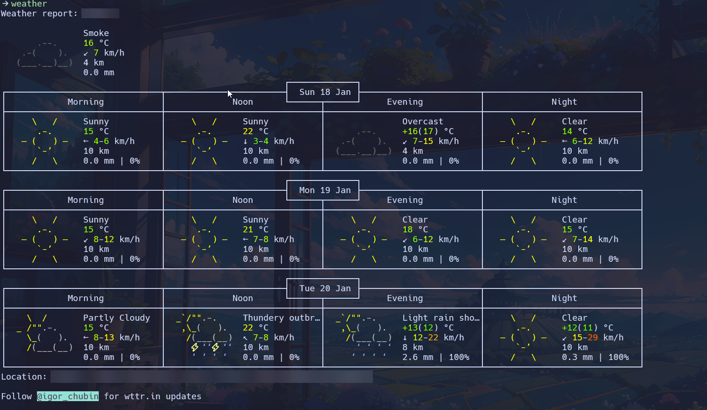

PowerShell: Winfig Dots Automation & Productivity Profile

Overview¶
Winfig PowerShell Profile is a modern, modular, and highly customizable PowerShell environment for Windows automation, productivity, and developer workflows. It brings together advanced functions, ergonomic aliases, beautiful prompt theming, and seamless integration with tools like fzf, bat, and git.
Features¶
- Custom keybindings for navigation and history
- fzf integration for interactive selection
- Command-not-found suggestions with winget
- Unified server launcher for dev servers
- Smart timer for command timing
- Modern trash (safe delete)
- Hastebin uploader with preview
- Weather & network info commands
- One-command update/upgrade
- Colorful, informative output
- Handy aliases for frequent tasks
Requirements¶
- PowerToys installed on Windows 11
- PowerShell 5+ for automation and scripting
- Git installed for dotfile management
- Administrator privileges for certain configurations
- Internet access for downloading dependencies
- Nerd Fonts (Hack Nerd Font) for enhanced terminal and UI appearance
Quick Install
- PowerShell 7:
winget install --id Microsoft.Powershell -e - Git:
winget install --id Git.Git -e - PowerShell 7 (optional, recommended):
winget install --id Microsoft.Powershell -e - fzf:
winget install --id Junegunn.fzf -e - bat:
winget install --id sharkdp.bat -e - Hack Nerd Fonts: Download from Nerd Fonts and install your favorite patched font.
Installation Methods¶
One-line installation - Downloads and runs automatically:
Invoke-RestMethod -useb https://raw.githubusercontent.com/Get-Winfig/winfig-dots/refs/heads/main/Powershell/setup.ps1 | Invoke-Expression
Why Web Install?
- Always gets the latest version
- No manual download required
- Automatic script verification

Download and run manually for offline environments:
Set-ExecutionPolicy RemoteSigned -Scope CurrentUser
# Download from GitHub
Invoke-WebRequest -useb "https://raw.githubusercontent.com/Get-Winfig/winfig-dots/refs/heads/main/Powershell/setup.ps1" -OutFile "setup.ps1"
Unblock-File -Path .\setup.ps1
.\setup.ps1
Note
- Ensure you have the latest script version
- Manual updates required for new releases
- Verify script integrity before running

Post-Installation¶
After installation, follow these steps:
- Reload Profile:
. $PROFILE - Test Key Features:
- Try aliases (e.g.,
hb,zi) - Use functions like
server,timer,trash,hastebin - Check fuzzy search (fzf) and color output (bat)
- Try aliases (e.g.,
- Customize:
- Edit or add functions in
functions/ - Add aliases in
Aliases.ps1 - Adjust config in
Config/
- Edit or add functions in
- Update Regularly:
- Pull latest changes and rerun
setup.ps1as needed
- Pull latest changes and rerun
- Troubleshoot:
- If something doesn't work, check the Troubleshooting section below
Tips & Usage Notes¶
- Use a Nerd Font in your terminal for best icon and prompt appearance.
- Customize your prompt, colors, and banners in the Config folder.
- Reload your profile with
. $PROFILEafter making changes. - Keep your tools (fzf, bat, git, PowerShell) up to date for best compatibility.
- Review and edit modular config files for easy personalization.
- The setup script is safe to re-run for updates or repairs.
- For advanced tweaks, explore the Initialize.ps1 and Config scripts.
Functions¶
server¶
Purpose
Launch a local development server (Node.js, Python, Hugo, PHP, etc.) with fuzzy selection, service preview, and custom port/path options.
server
server python 8080
How it works
- Uses fzf for interactive selection
- Previews service details before launch
- Supports custom ports and paths

timer¶
Purpose
Time the execution duration of any command or script, displaying the result in seconds.
timer { Get-Process }
timer { Copy-Item file.txt D:\Backup }
How it works
- Accepts any command as input
- Shows a colorized summary of execution time

trash¶
Purpose
Move files or directories to the Windows Recycle Bin using the Shell COM object.
trash file.txt
trash .\old_folder
How it works
- Provides feedback on success or failure

hastebin¶
Purpose
Upload file content to Hastebin, with interactive file selection and live preview using fzf and bat.
hastebin
Get-Content script.ps1 | hastebin
How it works
- Uses fzf and bat for selection and preview
- Copies the resulting URL to your clipboard

networkinfo¶
Purpose
Display detailed network information for the current system.
networkinfo
How it works
- Shows IP addresses, adapters, and more

weather¶
Purpose
Fetch and display the current weather for your configured location.
weather
weather "New York"
How it works
- Requires internet connection

update¶
Purpose
Check for available updates for winget, chocolatey, and PowerShell modules, displaying a clear summary.
update
How it works
- Does not install updates, only lists them
upgrade¶
Purpose
Install all available updates for winget, chocolatey, and PowerShell modules.
upgrade
How it works
- Provides a summary of updated packages and modules
Usage Tips
- All functions are modular and can be called directly (e.g.,
server,timer,trash). - For detailed help, run:
(Requires comment-based help in the function script.)
Get-Help <FunctionName>
Aliases¶
Below are the most useful and productivity-boosting aliases and functions included in your profile. All aliases are modular and can be customized in Aliases.ps1.
Git Shortcuts¶
| Alias/Function | Description | Usage Example |
|---|---|---|
| gst | Git status | gst |
| gbr | Git branch | gbr |
| gcomit | Git commit | gcomit |
| gcmmit | Git commit with message | gcmmit "Initial commit" |
| gammend | Git commit --amend | gammend |
| gamendnm | Git commit --amend --no-edit | gamendnm |
| glog | Git log | glog |
| gdf | Git diff | gdf |
| gpull | Git pull | gpull |
| gfetch | Git fetch | gfetch |
| gpush | Git push | gpush |
| gad | Git add all changes | gad |
| gcl | Git clone | gcl https://github.com/user/repo.git |
| guncommit | Undo last commit, keep changes | guncommit |
| gcheckout | Checkout new branch | gcheckout feature-x |
Tig Shortcuts¶
| Alias/Function | Description | Usage Example |
|---|---|---|
| t | Launch tig | t |
| tb | Tig blame | tb |
| tst | Tig status | tst |
| tlog | Tig log | tlog |
| tdf | Tig diff | tdf |
System & Info¶
| Alias/Function | Description | Usage Example |
|---|---|---|
| sysinfo | Show system info | sysinfo |
| myip | Show public IP | myip |
| localip | Show local IP | localip |
| flushdns | Flush DNS cache | flushdns |
| path | List PATH entries | path |
File & Directory Navigation¶
| Alias/Function | Description | Usage Example |
|---|---|---|
| .. | Go up one directory | .. |
| ... | Go up two directories | ... |
| .... | Go up three directories | .... |
| mkcd | Make and cd into directory | mkcd MyFolder |
| edit-here | Open current dir in VS Code | edit-here |
| here | Open current dir in Explorer | here |
File Operations¶
| Alias/Function | Description | Usage Example |
|---|---|---|
| touch | Create empty file | touch file.txt |
| la | List all files (PowerColorLS) | la |
| ll | Long list with sizes | ll |
| lf | List only files | lf |
| ld | List only directories | ld |
| lh | List hidden files | lh |
| back | Go to previous directory | back |
| lastmod | 5 most recently modified files | lastmod |
| oldest | 5 oldest files | oldest |
| recent | 5 most recently accessed files | recent |
Process & System Control¶
| Alias/Function | Description | Usage Example |
|---|---|---|
| pkill | Kill process by name | pkill notepad |
| clr | Clear console | clr |
| reload | Reload profile | reload |
| edit-profile | Edit profile in VS Code | edit-profile |
File Content Helpers¶
| Alias/Function | Description | Usage Example |
|---|---|---|
| head | Show first n lines | head file.txt 20 |
| tail | Show last n lines (follow) | tail file.txt 20 -f |
Hashing¶
| Alias/Function | Description | Usage Example |
|---|---|---|
| md5 | MD5 hash of file | md5 file.txt |
| sha1 | SHA1 hash of file | sha1 file.txt |
| sha256 | SHA256 hash of file | sha256 file.txt |
Utility & Misc¶
| Alias/Function | Description | Usage Example |
|---|---|---|
| which | Find command path | which git |
| open | Open file or dir | open file.txt |
| edit | Edit file(s) in VS Code | edit file.txt |
External Tools Aliases¶
| Alias | Description | Usage Example |
|---|---|---|
| cat | Alias for bat.exe (PowerShell 7+) | cat file.txt |
| h | Alias for Get-History (PowerShell 7+) | h |
| grep | Alias for Select-String | grep "pattern" file.txt |
| lg | Launch LazyGit | lg |
| htop | Launch NTop | htop |
| neofetch | Launch FastFetch | neofetch |
| view | Preview Markdown with Glow | view README.md |
| j | Zoxide jump | j folder |
| ji | Zoxide interactive | ji |
| sudo | Windows sudo (gsudo.exe) | sudo notepad |
| gitfetch | Onefetch for git stats | gitfetch |
Custom Locations¶
| Alias/Function | Description | Usage Example |
|---|---|---|
| Dotfiles | Go to Dotfiles dir | Dotfiles |
| TEMP | Go to TEMP dir | TEMP |
| Desktop | Go to Desktop | Desktop |
| Documents | Go to Documents | Documents |
| UserProfile | Go to UserProfile | UserProfile |
| Downloads | Go to Downloads | Downloads |
| Pictures | Go to Pictures | Pictures |
| Videos | Go to Videos | Videos |
| ShareXScreenshots | Go to ShareX screenshots | ShareXScreenshots |
Miscellaneous Utilities¶
| Alias/Function | Description | Usage Example |
|---|---|---|
| man | Show full help for command | man Get-ChildItem |
| file | Show basic file info | file file.txt |
| winutil | Run WinUtil full-release | winutil |
| winutildev | Run WinUtil dev-release | winutildev |
Customization
- All aliases are defined in
Aliases.ps1and can be edited or extended. - Use
Get-AliasorGet-Commandto explore more.
Frequently Asked Questions (FAQ)¶
Can I use my own PowerShell profile or dotfiles?
Yes! Back up your current profile before applying Winfig dotfiles. You can always merge or restore your customizations later.
Is it safe to run these scripts?
All scripts and configs are open source. Review them on GitHub before running.
How do I update my PowerShell profile?
Pull the latest changes from the repo and re-run setup.ps1.
How do I reload the profile after editing?
Run . $PROFILE or reload in your PowerShell session.
How do I add my own functions or aliases?
Place new scripts in functions/ or add aliases to Aliases.ps1, then reload the profile.
What if I use both PowerShell 5 and 7?
The setup script configures both versions automatically. You can use the same dotfiles for both.
Troubleshooting¶
| Issue | Solution |
|---|---|
| Profile changes not loading | Run . $PROFILE to reload the profile. |
| fzf or bat not found | Ensure they are installed and in your PATH. |
| Aliases/functions not working | Check for typos and reload the profile. |
| Script errors during setup | Run PowerShell as Administrator and check execution policy. |
| Encoding issues | Make sure your terminal uses UTF-8 encoding. |
| Module install errors | Use Install-Module -Scope CurrentUser and check your internet connection. |
If your issue isn’t listed, check the Winfig Dots Issues or open a new issue for help.